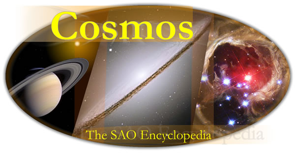

Cosmos is a unique astronomy reference written by research astronomers.
Our encyclopedia entries are for a general audience who wish to know detailed information on a wide range of astronomical topics. Cosmos is an evolving resource, with new entries being added all the time. Click here for information on the production of Cosmos.
Starting point
Planck Length * Dust Grain * Asteroid * Moon * Planet * Star * Galaxy * Universe
Top Ten
Equator * Orbital Inclination * Solstice * Shooting Star * Meteorite * Seasons * Zenith * Hertzsprung-Russell Diagram * Sublimation * Reflection Nebula
With 3D capability
Ecliptic * Interacting Galaxies
Cosmos is used by …
Universe Today * Astronomy Cast * Astronomy Picture of the Day * timeanddate.com